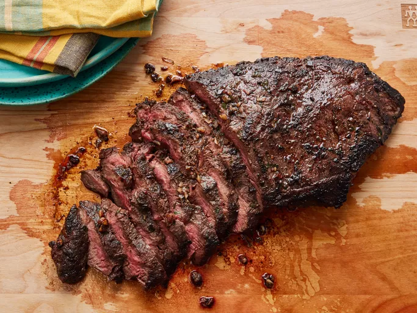

Perfect Flat Iron Steak Recipe

Description
A delicious and perfectly cooked flat iron steak. Flat iron steak is nicely marbeld and is less expensive than other steaks,
which make sit popular among home cooks.
When it's cooked properly, it's tender and juicy.
Ingredients
- 1 flat iron steak (2 pounds)
- 2 tablespoons of olive oil
- 2 cloves of garlic, minced
- 1 teaspoon of chopped fresh parsley
- 1/4 teaspoon of chopped fresh rosemary
- 1/2 teaspoon of chopped fresh chives
- 1/4 cup of dry red wine (preferably Cabernet Sauvignon)
- 1/2 teaspoon of salt
- 3/4 teaspoon of ground black pepper
- 1/4 teaspoon of dry mustard powder
Instructions
- Place steak inside a large resealable bag. Stir olive oil, garlic, parsley, rosemary, chives, red wine, salt, pepper, and mustard powder together in a small bowl.
- Pour marinade over steak in the bag. Press out as much air as you can and seal the bag. Marinate in the refrigerator for 2 to 3 hours.
- Heat a nonstick skillet over medium-high heat. Place steak in the hot skillet and discard any remaining marinade; sear and cook steak for 3 to 4 minutes on each side for medium rare, or to your desired degree of doneness.
An instant-read thermometer inserted into the center should read 130 degrees F (54 degrees C) for medium rare.
- Allow steak to rest for about 5 minutes before serving.
Home